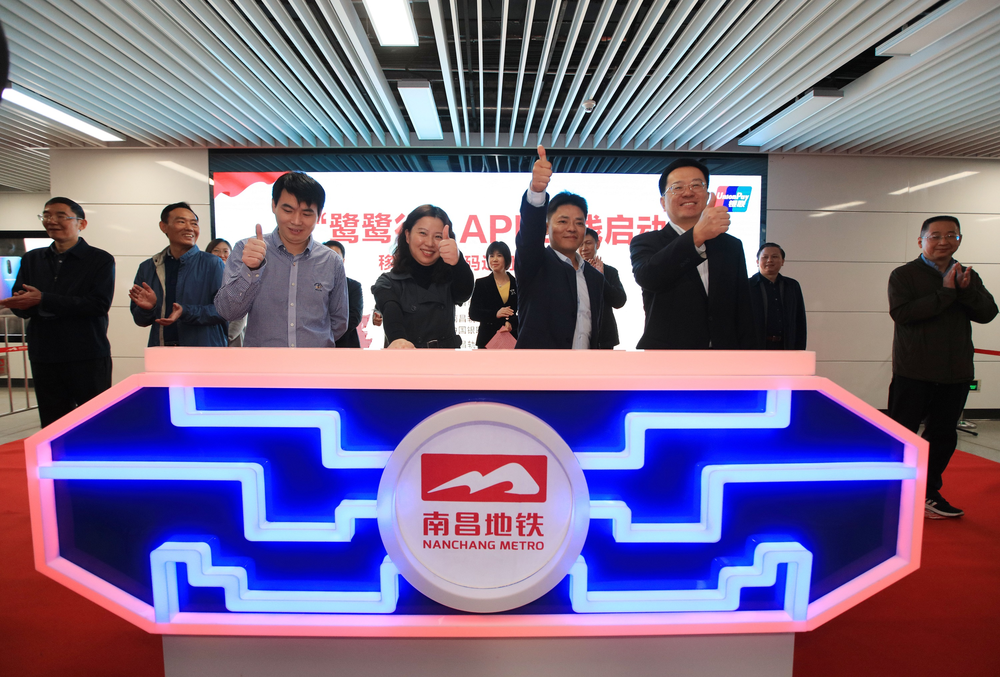
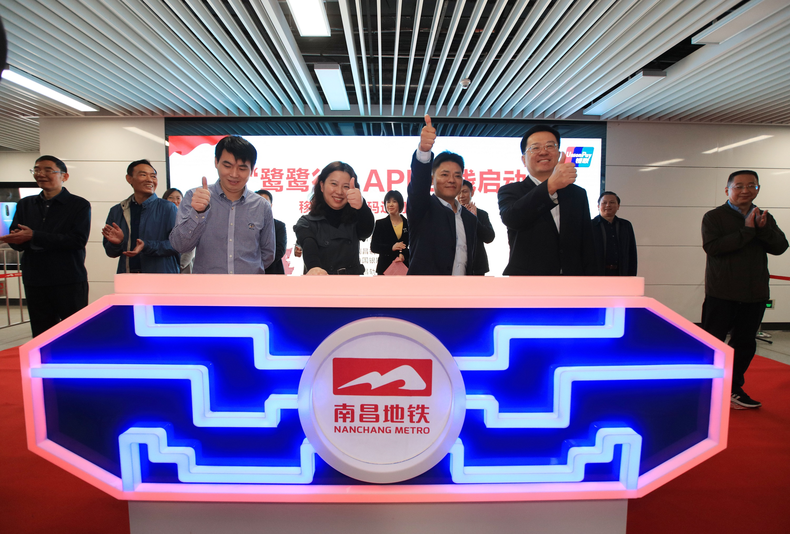

南昌地铁大事记Nanchang Metro Big Events
- Long Long Ago
- 2018
-
Feb 03江晓斌参观调研《红色家书》主题专列
 8月13日，以“红色家书”为主题的作品展在地铁大厦站站厅层举行。 此次“红色家书”展分为“献身革命”、“报效国家”、“对党忠诚”、“崇尚荣誉”四个部分，共选取六位革命烈士的红色书信，辅以烈士生平简介和感人事例介绍，再现了革命烈士舍生取义、英勇报国的家国情怀。2018年10月12日，市委常委、组织部长江晓斌，市委组织部副部长、市人大常委会选任联工委主任杨晓波在集团党委书记、董事长李云峰，党委副书记张东林陪同下先后参观调研地铁大厦站《红色家书》主题展区，体验南昌地铁“鹭鹭行”APP手机手机支付，并搭乘“红色家书”主题专列。江晓斌强调，集团要将《红色家书》中的文字和历史背景进行再创作、再升华，用真实的内心世界和表现手法来表现英雄人物，使党性教育由“虚”变“实”，起“死”为“生”，让《红色家书》中蕴含的革命精神成为一种可视感的文化、可触感的信仰，增强了党性教育和红色教育的生命力和吸引力，在春风化雨、情景交融中达到润物无声的效果。10 15“鹭鹭行”APP正式上线 开启南昌地铁乘车新体验“鹭鹭行”APP是华中地区首个采用中国银联行业二维码标准并完成系统开发的地铁移动支付产品。用户在下载“鹭鹭行”APP后，绑定任意一张“62”开头的银联卡并进行实名认证，即可扫码进出站。
8月13日，以“红色家书”为主题的作品展在地铁大厦站站厅层举行。 此次“红色家书”展分为“献身革命”、“报效国家”、“对党忠诚”、“崇尚荣誉”四个部分，共选取六位革命烈士的红色书信，辅以烈士生平简介和感人事例介绍，再现了革命烈士舍生取义、英勇报国的家国情怀。2018年10月12日，市委常委、组织部长江晓斌，市委组织部副部长、市人大常委会选任联工委主任杨晓波在集团党委书记、董事长李云峰，党委副书记张东林陪同下先后参观调研地铁大厦站《红色家书》主题展区，体验南昌地铁“鹭鹭行”APP手机手机支付，并搭乘“红色家书”主题专列。江晓斌强调，集团要将《红色家书》中的文字和历史背景进行再创作、再升华，用真实的内心世界和表现手法来表现英雄人物，使党性教育由“虚”变“实”，起“死”为“生”，让《红色家书》中蕴含的革命精神成为一种可视感的文化、可触感的信仰，增强了党性教育和红色教育的生命力和吸引力，在春风化雨、情景交融中达到润物无声的效果。10 15“鹭鹭行”APP正式上线 开启南昌地铁乘车新体验“鹭鹭行”APP是华中地区首个采用中国银联行业二维码标准并完成系统开发的地铁移动支付产品。用户在下载“鹭鹭行”APP后，绑定任意一张“62”开头的银联卡并进行实名认证，即可扫码进出站。 - 2019 年
-
10 18南昌地铁全力保障2019世界VR产业大会交通出行2019世界VR产业大会期间（10月19日至21日），由于时间与周末重叠，且受到通勤客流叠加影响，预计部分车站将出现大客流。为做好大会期间运输工作，南昌地铁提前制定专项方案，提升保驾等级，确保乘客出行安全、有序。
-
09 29南昌“宪法宣传号”地铁主题列车正式上线9月29日上午，由市委依法治市办、市司法局、市普法办和南昌轨道交通集团共同打造的南昌“宪法宣传号”地铁专列启动仪式在地铁大厦站内举行，南昌市委常委、政法委书记、市委依法治市办主任刘家富宣布启动专列，副市长、市公安局局长万秀奇讲话，集团党委副书记、总经理万先逵致辞。现场，各位领导嘉宾一起推动拉杆，启动南昌“宪法宣传号”地铁专列。南昌“宪法宣传号”地铁专列共6节车厢，由“红色、绿色、蓝色” 三种基调颜色组成，对应展示了宪法的修改历程、宪法保障公民权力和义务、2018宪法新修订部分等内容，车厢中穿插了尊法、学法、守法、用法的宣传漫画、宪法小知识以及全市书法名家书写的法治书法作品等。
 在设计方面，专列以南昌市标志性建筑为背景，以南昌地铁吉祥物“鹭鹭”为卡通形象宣传大使，彰显了南昌本地特色；清新的配色、亲和力的图案，拉近了与广大市民距离。
在设计方面，专列以南昌市标志性建筑为背景，以南昌地铁吉祥物“鹭鹭”为卡通形象宣传大使，彰显了南昌本地特色；清新的配色、亲和力的图案，拉近了与广大市民距离。 -
10 0175.11万乘次！新纪录献礼祖国70华诞！南昌地铁线网单日客流再创新高！9月30日，是国庆假期前最后一个工作日，南昌地铁线网总客流再创历史新高，达75.11万乘次，超越今年5月1日73.43万乘次原纪录，也本年度线网客流第二次破历史记录。昨日，南昌地铁1号线客流量46.63万乘次，2号线28.48万乘次，换乘客流16.53万乘次，线网各线路运营平稳有序，累计开行列车688列次，其中加开列车14列次，列车正点率达100%,运行图兑现率达100%。国庆长假期间，南昌地铁密切关注线网客流情况，一旦发生客流积压情况，及时组织备车上线加开。同时，加大人员保驾，实时灵活调度，提前做好大客流应对预想及相关演练，准备充足的票卡、备用金、铁马等物资。有针对性地在客服中心、自动售票机、闸机、站台、换乘通道、楼扶梯、限流区域等重点位置加强客流引导，对楼扶梯、垂直电梯、TVM等客运设备加强巡视检查力度，确保设备运行良好。
-
12 01南昌地铁全力以赴打好创文冲刺攻坚战11月30日至12月1日，南昌地铁对车站创文工作进行再部署、再强化，动员公司上下干部职工4000余人迅速行动，24小时开展综合整治,在1、2号线全线各站开展志愿服务活动，以决胜的信心、决战的姿态，时刻绷紧创建这根弦，确保创文工作取得扎扎实实的成效。
- Future